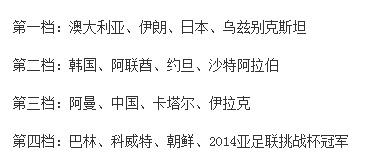

看了一下。另外14支球队随便挑3个和中国队一起都算死亡之组。@新浪体育:【亚洲杯抽签分档国足第3档韩国第2档】网页链接；2015年澳大利亚亚洲杯决赛分组抽签将于3月26日在悉尼举行，分档原则参照最新FIFA世界排名，国足仅位居亚洲第10，这样被无奈钉死在第三档上，诸强环伺，以1个净胜球的优势跻身亚洲杯正赛的国足，小组出线不容乐观。具体分档见附图 


 美国Menlo Park
美国Menlo Park